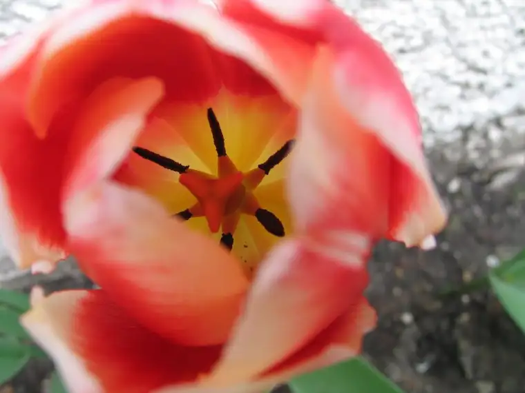

 |
| Object of my obsession (click to lean in closer!) |
{kind=link}
I couldn’t pull away. Something had lured me to a corner of my sister’s yard and held me captive there.
It was as if I were alone, just me and my camera and the new object of my obsession. Everything else had begun to fade: my boys playing in the yard, the dog barking from his chain, the friends and relatives gathered for my niece’s graduation now milling around looking at photos and poems and eating barbecues and cake.
I could hear my teen daughter’s shrill voice beckoning me away, but I was frozen against the stuccoed wall where my sister had spent some time fashioning a modest but lovely flower garden.
Click. Click. My camera, zeroing in, getting closer, closer…
“Mom!” My daughter again, not understanding why I was glued to something other than her.
Just a few more moments.
Often when this happens, when I find myself drawn to something that won’t let go, something commanding my creative eye, I don’t know exactly what I’ve come to find in that moment. I just know that I must not leave until I’ve captured it.
What I do remember about this lovely tulip is that it seemed to be asking me to lean in closer, as if it had a secret, and when I finally got the shot I’d been after several tries in, I knew it. I just knew it. At that point, I was finally released. “It is finished.” I was free to mingle. The gift would be opened later.
The unwrapping happened upon download, and looking again from my new vantage point, I saw what the flower’s whispers were all about. It was my soul staring back at me; not as I see it but as God does. And I thought back to a recent conversation with a friend, our musing about how God knows us better than we know ourselves, that He knows every moment of our lives in a way that is unfathomable to us.
Here’s what that tulip wanted me to know: that the pink and white layers have something to offer, certainly, and if you were to pass by you might want to stop and admire them, perhaps, or at least blow past with a wondering glance. But you might also think, “Oh, that’s a pink and white tulip.” And you may never, without stopping, without leaning in closely, discover that there is much more to this tulip than you could ever know from a pass-by.
Even now, looking again upon those exterior layers, seeing how they are sheltering the inner recesses, how gently they are enfolding the delicate interior, I realize this gift has been well-timed. For this week marks the beginning of a journey, one that will take me to a cloistered monastery for a while. Here, I will look not at the outside as most do but into the interior of a place that holds the sacred in the highest regard. And while I’m there to undertake the work I’ve been called to do, I may just get a chance to lean in and glimpse my own soul in a way that might not have been possible had I not stopped long enough to linger.
Q4U: When has an object of God’s creation whispered to you, and what did it say?